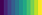

Note: This is the 2019 EuroVis version of the site, the updated version is here.
This visualization shows how color names in Korean and English map onto the Viridis color spectrum (  ) used in visualizations. You can see that the range of Viridis colors referred to by the name "green" doesn't line up with any Korean color name.
Labels next each y-axis mean the corresponding term and the number of records forming the distribution. We note that "파랑" only have 1 record.